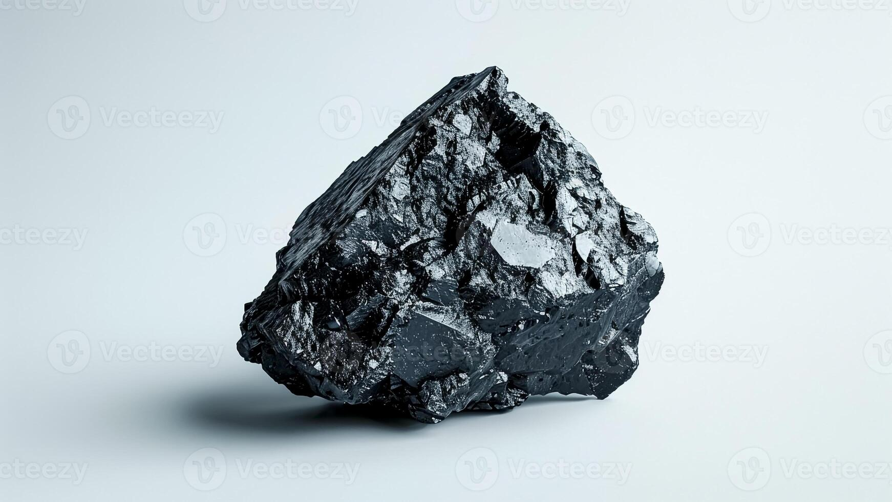

Five Times Cheaper Is Not the Same as Cheap: Haji Isam's Rp2,588 Bet on Bayan Resources (BYAN)

Image source: vecteezy.com
On 7 October 2026, three block trades crossed the negotiated market of the Indonesia Stock Exchange within about a minute. Together they moved 10.08 billion shares of PT Bayan Resources (BYAN) at Rp2,588 each, for Rp26.1 trillion, roughly US$1.5 billion. The next day the company confirmed that PT Jhonlin Baratama, the vehicle of Andi Syamsuddin Arsyad, better known as Haji Isam, now owns 30.25% of one of the country's largest coal miners.
On the regular board that same morning, BYAN changed hands between Rp12,500 and Rp14,250. So the headline wrote itself: an 80% discount, five times cheaper than the market.
I have spent ten years as an auditor, and a discount that large makes me check the reference price before I admire the bargain. When I did that here, the bargain mostly disappeared.
The yardstick is broken
A discount is only as honest as the price it is measured against, and BYAN's screen price is a poor yardstick.
Shareholders who each own more than 1% hold 98.49% of the company, according to Mikirduit's reading of the register. What is left for the public is a sliver. By mid-morning on the day of the crossing, the regular board had traded about 4 million shares, worth Rp56 billion. The block was 10 billion shares.
A few million shares a day set the price for a company with 33 billion shares outstanding. At that price BYAN was valued at around US$24 billion, on full-year 2025 net profit of US$768 million. That is about 30 times earnings and more than 8 times book value, for a thermal coal miner. Its large listed peers trade at around 1.6 times book.
So the market price was never a number at which anyone could buy 30% of Bayan. It was the price of the last few lots. Low Tuck Kwong, who built the company, accepted Rp2,588 for three quarters of his own stake. He knows what his mine is worth better than the screen does.
What Rp2,588 actually buys
At Rp2,588 a share, all of Bayan is worth about Rp86 trillion, or US$4.8 billion. That is the number to judge, and it is easiest to judge next to PT Adaro Andalan Indonesia (AADI), the closest peer in size.
BYAN at the deal price
BYAN on the screen
AADI on the screen
Share price
Rp2,588
about Rp13,085 (7 Oct average)
Rp12,325 (6 Oct, intraday)
Value of the whole company
US$4.8 billion
US$24.5 billion
US$5.4 billion
Price to trailing 12-month earnings
5.8x
about 30x
6.7x
Price to book (June 2026 equity)
1.9x
9.5x
1.4x
My calculations from reported shares, prices and financial statements, at Rp17,800 per US dollar.
The deal price is not below the sector. Mirae Asset analyst Fauzan Luthfi Djamal put it at 5.7 to 5.9 times net profit, against an industry range of 6 to 7.5 times. Haji Isam paid roughly what coal miners are worth today. A BRI Danareksa Sekuritas note from the same week put the deal at an annualised price-to-earnings ratio of about 6.1 times, against roughly 29.7 times on the regular market, the same gap stated a different way.
Against AADI the picture is mixed, and I want to be precise about it. On earnings, Bayan at the deal price is slightly cheaper, because AADI has rallied to record highs. On assets it is clearly more expensive: 1.9 times book against 1.4. The two companies earned almost the same in 2025, US$768 million and US$760 million. But AADI sells slightly more coal, carries US$3.9 billion of equity against Bayan's US$2.6 billion, and has just collected US$735 million from selling its Kestrel stake.
There is one more cost that the multiples hide. Anyone can buy AADI on the open market at its price. Haji Isam paid a similar price for 30.25% of a company where the Low family still holds about 32%, more than he does. Buyers usually pay extra to get control. He paid a full price without it.
Unless he knows something we don't
So why would an experienced coal man pay a full price for a minority stake? The other reading is that he sees value the public cannot. I can't prove it, but several facts point that way.
He knows the business. Jhonlin Baratama is itself a coal miner and mining contractor in Kalimantan. In August he was photographed touring Bayan's operations in Kutai Kartanegara with Low Tuck Kwong. Outside investors read the annual report. He has stood in the pit.
The pit is unusually good. Tabang produced 62.5 million tonnes in 2025 at a strip ratio of 3.9 and a cash cost of US$32.5 a tonne. Bayan's EBITDA margin was about 34%, against roughly 24% at AADI, and much of the infrastructure for its target of more than 80 million tonnes a year is already in place. Earnings today may understate what the asset can produce.
Then there is the regulatory side, where information is least evenly spread. In Indonesia a mine is worth what its annual production permit, the RKAB, allows. Bayan declared force majeure on 11 September because its revised RKAB had not been approved. The sale agreement was signed on 16 September. The approval arrived on 23 September. The ministry says the two are unrelated, and I have no evidence otherwise. But a buyer who is confident about future quotas, or about how the single-channel export regime planned for 2027 will work, would rationally pay more than one who is guessing.
Finally, the coal price. Newcastle coal was back at US$150 a tonne in early October, its highest since June. If he expects that to last, 5.8 times last year's earnings is a much lower multiple of next year's.
But coal prices have a habit of not lasting. Indonesia's benchmark coal price, the HBA, hit a record US$127.05 a tonne in February 2011. Prices then fell sharply in the first half of 2012, as exports from the United States, Indonesia and Australia grew while Chinese demand growth slowed, according to the Reserve Bank of Australia. The slide did not stop there. By July 2016 the HBA stood at US$53.00, less than half its peak. A fair multiple on today's earnings stops being fair if coal repeats that fall.
What I take from it
Knowing more is not the same as being right. Bayan's own management guides to a higher cash cost of US$36 to US$42 a tonne this year, coal is a cyclical business, and local media report that the purchase is financed with bank credit secured on shares of his listed companies. That is a large, leveraged bet on one commodity.
For the rest of us, the lesson is about anchoring. "Five times cheaper than the market" compares a real transaction with a price made by a few million shares. The real comparison is with what other coal miners cost, and on that measure Haji Isam paid about the going rate, and more than that on assets.
It also cuts the other way. The only time someone bought a third of this company, the price was Rp2,588. Anyone holding BYAN near Rp13,000 should ask which of the two numbers is the real one.
This reflects my personal investment decision and perspective. It is not intended as investment advice or a recommendation to buy, sell, or hold any securities. Investing in the capital market involves significant risks, including the potential loss of capital. Each investor should conduct their own research and make decisions according to their individual risk tolerance and financial circumstances.
Sumber gambar: vecteezy.com
Pada 7 Oktober 2026, tiga transaksi blok melintasi pasar negosiasi Bursa Efek Indonesia dalam rentang waktu sekitar satu menit. Secara total, transaksi itu memindahkan 10,08 miliar saham PT Bayan Resources (BYAN) pada harga Rp2.588 per saham, senilai Rp26,1 triliun, atau sekitar US$1,5 miliar. Sehari kemudian, perusahaan mengonfirmasi bahwa PT Jhonlin Baratama, kendaraan milik Andi Syamsuddin Arsyad yang lebih dikenal sebagai Haji Isam, kini memiliki 30,25% dari salah satu perusahaan tambang batu bara terbesar di Indonesia.
Di pasar reguler pada pagi yang sama, saham BYAN diperdagangkan antara Rp12.500 dan Rp14.250. Judul berita pun langsung terbentuk sendiri: diskon 80%, lima kali lebih murah dari harga pasar.
Saya sudah sepuluh tahun berkarier sebagai auditor, dan diskon sebesar itu membuat saya ingin memeriksa harga acuannya sebelum ikut mengagumi "harga murah" tersebut. Setelah saya periksa, sebagian besar dari harga murah itu menghilang.
Alat ukurnya yang bermasalah
Sebuah diskon hanya sejujur harga yang dijadikan pembandingnya, dan harga di layar BYAN adalah alat ukur yang buruk.
Pemegang saham yang masing-masing memiliki lebih dari 1% menguasai 98,49% perusahaan, berdasarkan pembacaan Mikirduit atas daftar pemegang saham. Yang tersisa untuk publik hanyalah sepihan kecil. Hingga pertengahan pagi pada hari transaksi blok itu terjadi, pasar reguler baru memperdagangkan sekitar 4 juta saham, senilai Rp56 miliar. Sementara transaksi blok itu sendiri mencapai 10 miliar saham.
Beberapa juta saham per hari menentukan harga untuk perusahaan dengan 33 miliar saham beredar. Pada harga itu, BYAN dihargai sekitar US$24 miliar, dengan laba bersih sepanjang 2025 sebesar US$768 juta. Itu berarti sekitar 30 kali laba dan lebih dari 8 kali nilai buku, untuk emiten tambang batu bara termal. Para pesaingnya yang tercatat besar diperdagangkan di sekitar 1,6 kali nilai buku.
Jadi harga pasar itu bukanlah angka yang bisa dipakai siapa pun untuk membeli 30% Bayan. Itu hanyalah harga dari beberapa lot terakhir. Low Tuck Kwong, pendiri perusahaan, menerima Rp2.588 untuk tiga perempat dari kepemilikannya sendiri. Dialah yang paling tahu berapa nilai tambangnya, lebih daripada yang ditunjukkan di layar.
Apa yang sebenarnya dibeli dengan Rp2.588
Pada harga Rp2.588 per saham, seluruh Bayan dihargai sekitar Rp86 triliun, atau US$4,8 miliar. Itulah angka yang perlu dinilai, dan paling mudah dinilai berdampingan dengan PT Adaro Andalan Indonesia (AADI), pesaing dengan ukuran paling mendekati.
BYAN pada harga transaksi
BYAN di layar
AADI di layar
Harga saham
Rp2.588
sekitar Rp13.085 (rata-rata 7 Okt)
Rp12.325 (6 Okt, intraday)
Nilai seluruh perusahaan
US$4,8 miliar
US$24,5 miliar
US$5,4 miliar
Harga terhadap laba 12 bulan terakhir
5,8x
sekitar 30x
6,7x
Harga terhadap nilai buku (ekuitas Juni 2026)
1,9x
9,5x
1,4x
Perhitungan saya berdasarkan jumlah saham, harga, dan laporan keuangan yang dipublikasikan, menggunakan kurs Rp17.800 per dolar AS.
Harga transaksi ini tidak berada di bawah harga sektor. Analis Mirae Asset, Fauzan Luthfi Djamal, memperkirakannya di kisaran 5,7 hingga 5,9 kali laba bersih, dibandingkan kisaran industri 6 hingga 7,5 kali. Haji Isam membayar kurang lebih sesuai harga wajar emiten tambang batu bara saat ini. Catatan BRI Danareksa Sekuritas dari pekan yang sama menyebut harga transaksi ini setara rasio harga terhadap laba tahunan sekitar 6,1 kali, dibandingkan sekitar 29,7 kali di pasar reguler, kesenjangan yang sama hanya disampaikan dengan cara berbeda.
Dibandingkan dengan AADI, gambarannya beragam, dan saya ingin tepat dalam menjelaskannya. Dari sisi laba, Bayan pada harga transaksi sedikit lebih murah, karena AADI sudah menguat ke level tertinggi sepanjang masa. Dari sisi aset, Bayan justru jauh lebih mahal: 1,9 kali nilai buku dibanding 1,4 kali milik AADI. Kedua perusahaan mencetak laba yang hampir sama pada 2025, masing-masing US$768 juta dan US$760 juta. Namun AADI menjual batu bara sedikit lebih banyak, memiliki ekuitas US$3,9 miliar dibandingkan US$2,6 miliar milik Bayan, dan baru saja mengantongi US$735 juta dari penjualan kepemilikannya di Kestrel.
Ada satu biaya lagi yang tersembunyi di balik rasio-rasio itu. Siapa pun bisa membeli AADI di pasar terbuka pada harganya. Haji Isam membayar harga yang setara untuk 30,25% perusahaan yang keluarga Low masih menguasai sekitar 32% di dalamnya, lebih besar dari kepemilikannya sendiri. Pembeli biasanya membayar ekstra untuk mendapatkan kendali. Ia membayar harga penuh tanpa mendapatkan itu.
Kecuali ia tahu sesuatu yang tidak kita ketahui
Jadi mengapa seorang pengusaha tambang batu bara yang berpengalaman mau membayar harga penuh untuk kepemilikan minoritas? Pembacaan lainnya adalah bahwa ia melihat nilai yang tidak terlihat oleh publik. Saya tidak bisa membuktikannya, tetapi beberapa fakta mengarah ke sana.
Ia mengenal bisnis ini. Jhonlin Baratama sendiri adalah perusahaan tambang dan kontraktor pertambangan batu bara di Kalimantan. Pada Agustus, ia terpotret mengunjungi operasi Bayan di Kutai Kartanegara bersama Low Tuck Kwong. Investor luar membaca laporan tahunan. Ia sendiri sudah berdiri di lubang tambangnya.
Tambangnya memang luar biasa baik. Tabang memproduksi 62,5 juta ton pada 2025 dengan strip ratio 3,9 dan biaya kas US$32,5 per ton. Margin EBITDA Bayan sekitar 34%, dibandingkan sekitar 24% milik AADI, dan sebagian besar infrastruktur untuk target produksinya di atas 80 juta ton per tahun sudah tersedia. Laba hari ini mungkin meremehkan apa yang sebenarnya bisa dihasilkan aset tersebut.
Kemudian ada sisi regulasi, tempat informasi paling tidak merata tersebarnya. Di Indonesia, nilai sebuah tambang ditentukan oleh izin produksi tahunannya, yaitu RKAB. Bayan menyatakan force majeure pada 11 September karena revisi RKAB-nya belum disetujui. Perjanjian jual beli ditandatangani pada 16 September. Persetujuannya baru turun pada 23 September. Pihak kementerian menyatakan kedua hal itu tidak berkaitan, dan saya tidak memiliki bukti sebaliknya. Namun pembeli yang percaya diri terhadap kuota di masa depan, atau terhadap bagaimana rezim ekspor single-channel yang direncanakan pada 2027 akan berjalan, secara rasional akan bersedia membayar lebih dibandingkan pembeli yang sekadar menerka.
Terakhir, harga batu bara. Batu bara Newcastle kembali ke US$150 per ton pada awal Oktober, tertinggi sejak Juni. Jika ia memperkirakan harga itu akan bertahan, 5,8 kali laba tahun lalu menjadi kelipatan yang jauh lebih rendah dari laba tahun depan.
Namun harga batu bara punya kebiasaan untuk tidak bertahan lama. Harga Batubara Acuan (HBA) Indonesia pernah mencatat rekor US$127,05 per ton pada Februari 2011. Harga kemudian turun tajam pada semester pertama 2012, saat ekspor dari Amerika Serikat, Indonesia, dan Australia meningkat sementara pertumbuhan permintaan Tiongkok melambat, menurut Reserve Bank of Australia. Penurunan itu tidak berhenti di situ. Pada Juli 2016, HBA berada di US$53,00, kurang dari separuh titik tertingginya. Kelipatan yang terlihat wajar atas laba hari ini akan berhenti menjadi wajar jika batu bara mengulang penurunan seperti itu.
Yang saya ambil dari semua ini
Mengetahui lebih banyak tidak sama dengan menjadi benar. Manajemen Bayan sendiri memberikan guidance biaya kas yang lebih tinggi, US$36 hingga US$42 per ton tahun ini, batu bara adalah bisnis yang siklikal, dan media lokal melaporkan bahwa pembelian ini dibiayai dengan kredit bank yang dijamin saham perusahaan-perusahaan miliknya yang tercatat di bursa. Itu adalah taruhan besar dan berleverage pada satu komoditas.
Bagi kita yang lain, pelajarannya ada pada anchoring. "Lima kali lebih murah dari harga pasar" membandingkan transaksi nyata dengan harga yang dibentuk oleh beberapa juta saham. Perbandingan yang sebenarnya adalah dengan harga emiten tambang batu bara lain, dan dengan ukuran itu, Haji Isam membayar kurang lebih sesuai harga pasar, bahkan lebih mahal dari sisi aset.
Ini juga berlaku sebaliknya. Satu-satunya kali seseorang membeli sepertiga perusahaan ini, harganya adalah Rp2.588. Siapa pun yang memegang BYAN di sekitar Rp13.000 perlu bertanya, mana dari dua angka itu yang sebenarnya mencerminkan nilai yang nyata.
Tulisan ini mencerminkan keputusan dan perspektif investasi pribadi saya. Ini tidak dimaksudkan sebagai saran investasi atau rekomendasi untuk membeli, menjual, atau menahan efek apa pun. Berinvestasi di pasar modal melibatkan risiko signifikan, termasuk potensi kerugian modal. Setiap investor harus melakukan riset sendiri dan membuat keputusan sesuai toleransi risiko dan kondisi keuangan masing-masing.